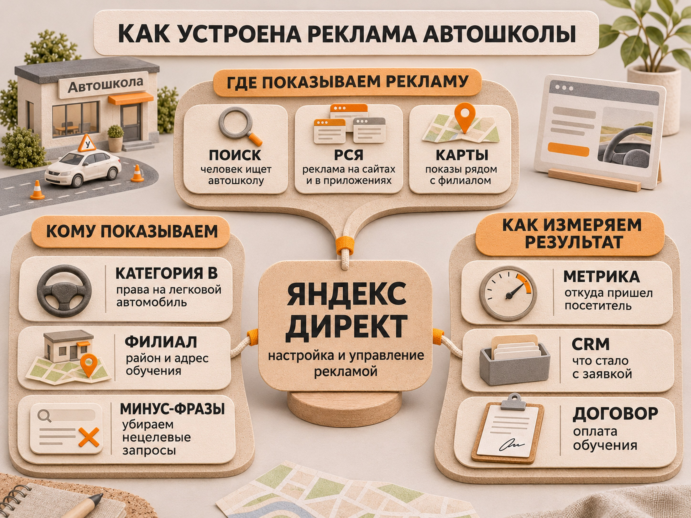
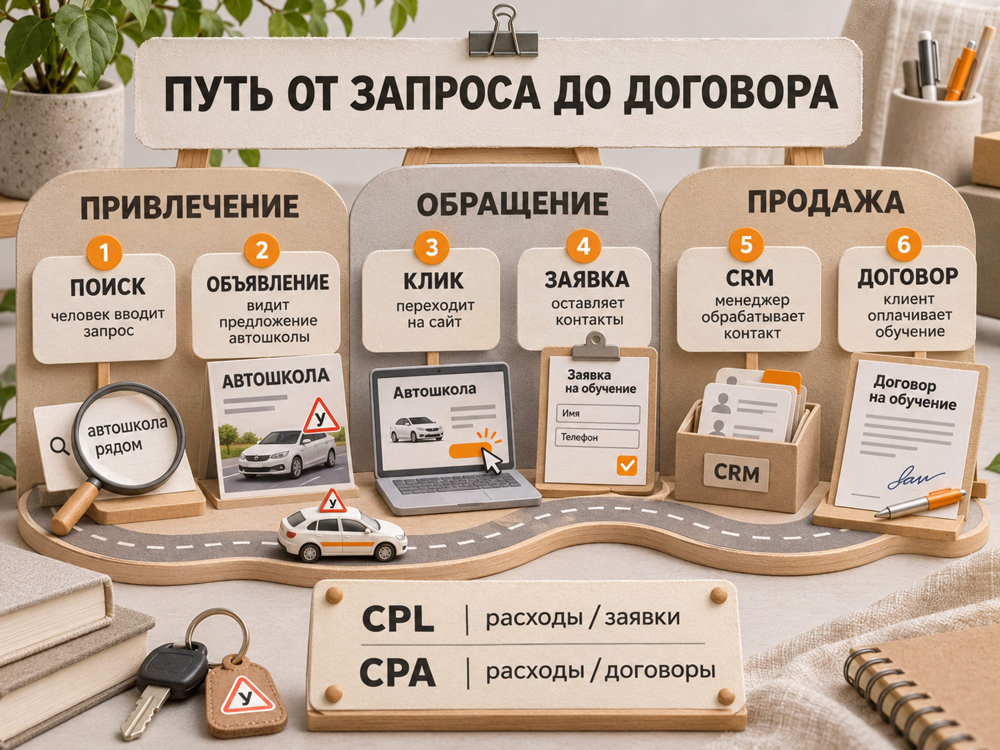
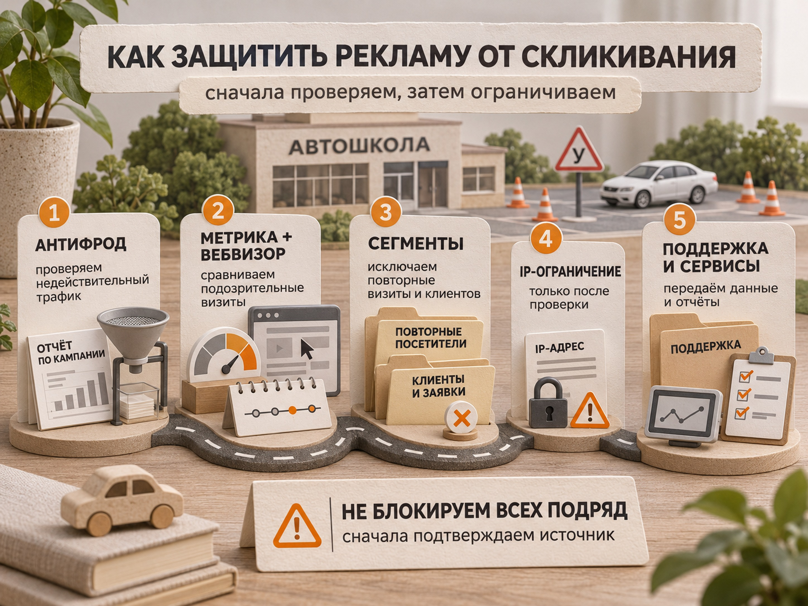

Почему продвижение автошколы нельзя сводить к одному каналу
Пользователь редко принимает решение после первого контакта. Он может увидеть объявление по запросу «автошкола рядом», открыть сайт, посмотреть цену, вернуться через несколько дней, сравнить филиалы и только потом позвонить. В другой ситуации решение принимается после рекомендации знакомого, но человек всё равно проверяет школу в поиске и на Картах.
Из этого следуют четыре практических вывода.
Во-первых, один источник трафика не показывает всей картины. Поиск приводит пользователей с уже сформированным спросом. РСЯ помогает возвращать тех, кто изучал условия. Карты важны для локального выбора, когда человеку нужен филиал рядом с домом, работой или учебой.
Во-вторых, заявка не равна ученику. В форме может оставить номер человек, который сравнивает рынок, ищет бесплатные материалы или пока не определился с датой старта. Поэтому в CRM нужно фиксировать статус обращения и итог: консультация, запись, договор, оплата.
В-третьих, рекламное объявление и сайт должны говорить об одном и том же. Если в запросе указан филиал, а объявление ведёт на общую страницу без адреса и расписания, часть пользователей уйдёт до обращения.
В-четвёртых, в конкурентной нише важна скорость реакции. Даже хороший лид может уйти в другую автошколу, если ему перезвонили через несколько часов, не смогли назвать ближайшую группу или не объяснили условия оплаты.

Что определить до запуска рекламы
География и продукт
Сначала зафиксируйте, что именно рекламируется:
- город и конкретный филиал;
- категория B или другая категория;
- очное, дистанционное или смешанное обучение;
- ближайшая дата набора;
- расписание теории и практики;
- стоимость, рассрочка и дополнительные платежи;
- маршрут до филиала и доступность площадки;
- способ записи: форма, звонок, мессенджер или консультация.
Если у школы несколько филиалов, не сводите их в одну безликую кампанию. У филиалов могут отличаться адрес, расписание, инструкторы, площадка и предложение. Эти различия должны быть видны в объявлениях и на посадочных страницах.
Экономика заявки
До запуска определите допустимую стоимость не только заявки, но и договора.
Стоимость заявки, или CPL, считается так:
Расходы на рекламу / количество целевых заявок = CPL.
Стоимость договора, или CPA, считается так:
Расходы на рекламу / количество договоров = CPA.
Если школа получает 100 обращений, но только 10 из них доходят до договора, оптимизировать кампанию только по CPL опасно. Алгоритм может искать дешёвые формы, которые не превращаются в записи.
Для расчёта допустимого CPA нужны маржинальный доход с ученика, доля возвратов и расходы на обработку обращения. В расчёт нельзя бездумно включать всю выручку: важно понимать, сколько денег реально остаётся после затрат на обучение и сопровождение.
Как настроить рекламу автошколы в Яндекс Директе
1. Разделить спрос по намерению
На старте полезно разделить как минимум такие группы:
- брендовые запросы с названием школы;
- горячие запросы «автошкола в городе», «обучение на права», «категория B»;
- запросы по филиалу, району и станции метро;
- запросы по условиям: цена, рассрочка, расписание, срок обучения;
- запросы по конкретной категории;
- запросы конкурентов как отдельный тест;
- информационные запросы, которые не смешиваются с коммерческим ядром.
Разделение нужно не ради красивой структуры. Оно позволяет увидеть, какой тип спроса приносит обращения, а какой только расходует бюджет. Для каждой группы можно написать отдельное объявление и вести пользователя на соответствующий блок сайта.
2. Сначала проверить поиск
Поиск обычно является первым каналом для теста, потому что пользователь уже формулирует потребность. Но горячий запрос не означает автоматическую готовность купить. Запрос «автошкола» может включать сравнение цен, поиск отзывов, проверку лицензии и интерес к экзамену.
На поиске нужно регулярно проверять фактические поисковые фразы. Нецелевые запросы добавляются в минус-фразы, а коммерческие формулировки разделяются по смыслу. Отдельно стоит отслеживать запросы с названием конкурента: они могут давать показы, но качество таких обращений нужно оценивать отдельно.
3. Использовать РСЯ осторожно
РСЯ подходит для повторного контакта и расширения охвата, но широкая аудитория быстро расходует тестовый бюджет. На старте лучше разделять ретаргетинг и холодные сценарии, чтобы не смешивать пользователей, которые уже были на сайте, с теми, кто ещё не знаком со школой.
Для ретаргетинга полезны сегменты посетителей страницы цены, расписания, филиала и формы записи. После заявки или договора такого пользователя нужно исключать из обычной рекламной коммуникации или переводить в отдельный сценарий.
4. Не забывать про Карты и локальные страницы
Для автошколы адрес имеет прямое значение. Пользователь может выбрать не самую дешёвую школу, а ту, до которой удобно добираться. Поэтому на сайте и в рекламных материалах должны совпадать название филиала, адрес, график, телефон, фотографии и условия обучения.
Карты не заменяют поисковую кампанию, но дополняют её в локальном спросе. Ошибка возникает, когда школа продвигает филиал только названием, но не показывает, чем он отличается и как до него добраться.
Какой сайт нужен для рекламы автошколы
Посадочная страница должна отвечать на вопросы пользователя до отправки формы.
На первом экране желательно показать город, категорию, ближайший набор и основное действие. Ниже должны быть адреса филиалов, расписание, цена и состав оплаты, варианты рассрочки, фотографии классов и машин, информация о преподавателях, документы, отзывы и ответы на частые вопросы.
Форма должна быть короткой. Чем больше обязательных полей, тем выше риск потерять пользователя. Но короткая форма не означает отсутствие контроля: в CRM нужно передавать источник, кампанию, филиал, категорию и дату обращения.
Отдельно проверьте мобильную версию. Значительная часть аудитории приходит со смартфона, а ошибка в кнопке звонка, форме или загрузке страницы напрямую влияет на стоимость заявки.
Какие цели и данные передавать в Метрику и CRM
Минимальный набор целей:
- отправка формы;
- клик по телефону;
- звонок достаточной длительности;
- обращение в мессенджер;
- просмотр страницы с ценой или расписанием;
- запись на консультацию;
- договор и оплата, если данные можно передать корректно.
Не стоит включать в одну цель все клики подряд. Просмотр кнопки и оплаченный договор имеют разную ценность. Если система оптимизируется по случайным действиям, она будет искать пользователей, которые чаще нажимают, а не тех, кто чаще записывается.
Связка Метрика и CRM нужна для ответа на три вопроса:
- Из какого источника пришло обращение?
- Сколько обращений оказалось целевыми?
- Какая кампания привела договор?
Если звонки и статусы менеджеров не попадают в общую аналитику, рекламный отчёт будет неполным. В таком случае нельзя уверенно сравнивать кампании только по количеству форм.
Подробнее о работе с сегментами Яндекс Метрики, офлайн-конверсиями в Директе и квалификацией лидов можно прочитать в отдельных материалах.
Что показывают открытые кейсы
Открытые кейсы полезны как примеры постановки задачи, но не как прайс-лист для всей ниши.
В кейсе автошколы в Пензе опубликованы 251 заявка, средняя цена заявки 1115,29 рубля и конверсия основной цели 3,60% за период с 1 марта по 16 июля 2026 года. В описании отдельно указано, что результат получен на конкретной посадочной странице, с разделением коммерческого спроса, категорий и географии. Это не означает, что такая стоимость будет в любом городе.
В кейсе «Автокурса» за январь-апрель 2025 года авторы сообщают о 92 лидах из поиска, РСЯ и Поиск-баннеров при средней цене конверсии 3010 рублей. В публикации также указаны бюджет 69 000 рублей и семь кампаний, но эти показатели нельзя механически пересчитывать в универсальный бюджет для другой школы: в проекте менялись цели, филиалы, география и структура кампаний.
В подборке кейсов по категории «Автошкола» есть пример регионального проекта с 47 целевыми заявками в месяц при бюджете 65 000 рублей. Простое деление даёт авторский расчёт около 1383 рублей за заявку. Это именно расчёт по опубликованным двум значениям, а не отдельный показатель, подтверждённый независимой статистикой.
Есть и более сильные заявления: например, снижение стоимости заявки с 3000 до 350 рублей и рост числа заявок в 17 раз. Но в описании такого проекта одновременно упоминаются новый сайт, реклама и CRM. Поэтому результат нельзя приписывать одному Яндекс Директу.
Правильный вывод из кейсов такой: стоимость заявки зависит от города, сезона, конкуренции, посадочной страницы, качества целей, скорости обработки и определения самой заявки. Сравнивать нужно не только CPL, а одинаковые этапы воронки.
Почему трафик может не работать
Нет показов
Проверьте бюджет, ставки, географию, расписание показов, модерацию, объём спроса и ограничения в кампании. Не начинайте с вывода о скликивании: при отсутствии показов проблема обычно находится раньше, на уровне настроек или недостаточного спроса.
Показы есть, кликов мало
Проверьте соответствие объявления запросу, заголовок, уточнения, быстрые ссылки и оффер. Пользователь должен сразу увидеть, что перед ним автошкола в нужном городе, нужная категория и понятное условие записи.
Клики есть, заявок мало
Проверьте скорость загрузки, мобильную версию, форму, телефон, цену, филиал и соответствие страницы объявлению. Если объявление обещает обучение рядом с метро, а на странице нет адреса и маршрута, часть кликов будет уходить без обращения.
Заявки есть, договоров мало
Проверьте качество лидов, скорость звонка, скрипт менеджера, расписание, цену, условия рассрочки и передачу статусов в CRM. В этом месте рекламная проблема часто оказывается проблемой продаж.

Как защищать рекламу автошколы от скликивания
В конкурентной нише владелец может столкнуться с подозрительными кликами, повторными визитами и заявками с несуществующими контактами. История о конфликте бывших партнёров и намеренной атаке конкурента возможна, но её нельзя выдавать за доказанный факт без данных. Один резкий всплеск кликов сам по себе не подтверждает злонамеренные действия.
У Яндекс Директа есть собственная система защиты от недействительного трафика. Часть показов, кликов и конверсий фильтруется, а расходы за недействительный трафик возвращаются на баланс или не списываются. При этом в Метрике и CRM могут сохраняться все визиты, включая те, которые уже отфильтрованы из отчётов Директа. Поэтому данные нужно сравнивать правильно.
Практический порядок действий:
- Сначала проверить отчёт о недействительном трафике в Директе.
- Затем сравнить отчёты Директа с Метрикой и Вебвизором за тот же период.
- Посмотреть повторяющиеся визиты, минимальную длительность, странные последовательности действий и несуществующие номера.
- Проверить, не является ли всплеск следствием изменения бюджета, кампании, географии, стратегии или сезонного спроса.
- Если подозрения сохраняются, передать в поддержку номер объявления, период, номер счётчика Метрики и ссылки на отчёты.
Сегменты вместо постоянной рекламы всем посетителям
Сегменты Метрики можно использовать в Директе для показа или исключения аудитории. Практически полезно разделять тех, кто только посмотрел сайт, несколько раз возвращался к странице цены или расписания, уже оставил заявку, заключил договор или посещал страницу конкретного филиала.
Подробнее настройка описана в материале «Как создать сегмент в Яндекс Метрике».
Порог «пять визитов» можно протестировать как рабочую гипотезу, но не нужно считать его универсально правильным. В одном городе повторный посетитель может быть почти готов к записи, а в другом он просто сравнивает школы. Сегмент нужно оценивать по качеству обращений и расходам, а не по самому числу визитов.
IP-ограничения
Запрет показов по IP-адресам существует, но это не основная защита. Адрес может быть динамическим, а несколько реальных пользователей могут выходить в интернет через один прокси или общий адрес. Поэтому блокировать IP стоит только после проверки логов и отчётов, небольшими точечными списками и с контролем побочного эффекта.
Внешние сервисы
Сервис защиты от ботов и скликивания можно подключать как дополнительный слой, особенно если есть подозрительные визиты на сайт, заявки с несуществующими номерами и повторяющиеся сценарии. Но внешний сервис не заменяет цели, Метрику, CRM и проверку отчётов Директа. Без базовой аналитики он не ответит, какой источник действительно привёл качественного клиента.

Как конкурировать в нише автошкол без ценовой войны
В городах с большим числом автошкол пользователь сравнивает не только цену. На выбор влияют адрес, время занятий, наличие машин, инструкторы, отзывы, рассрочка, сопровождение на экзамене и понятность договора.
Конкурентное преимущество нужно формулировать конкретно:
- филиал рядом с определённым районом;
- вечерние или выходные группы;
- несколько площадок для практики;
- понятный график;
- прозрачный состав стоимости;
- поддержка при записи на экзамен;
- реальные фотографии и отзывы;
- быстрый ответ на обращение.
Запросы с названиями конкурентов можно тестировать отдельно. Не смешивайте их с горячими запросами своей школы и не обещайте того, чего нет на посадочной странице. Если пользователь ищет конкретного конкурента, стоимость обращения и его качество могут отличаться от обычного коммерческого спроса.
Главная защита от конкуренции - не максимальная громкость рекламы, а точное совпадение запроса, объявления, филиала, предложения и обработки обращения.
Практический прогноз на 2026 год
Это прогнозные выводы, а не официальная статистика рынка.
Первое. Важнее будет не количество форм, а передача в Директ статусов из CRM. Школы, которые видят договор и оплату, смогут отличать дешёвый лид от реального результата.
Второе. Локальная структура станет важнее общего объявления «автошкола». Для сети филиалов придётся отдельно показывать адрес, расписание, условия и маршрут.
Третье. Кампании будут чаще проверять по качеству трафика: поисковым фразам, площадкам, устройствам, повторным визитам и доле нецелевых обращений.
Четвёртое. Скликивание и ботовый трафик будут обсуждаться чаще, но правильная реакция - не блокировать всё подряд. Сначала нужно определить источник, отделить недействительный трафик от обычных нецелевых посетителей и только потом ограничивать показы.
Пятое. Конкурировать одной скидкой станет сложнее. Устойчивее будут работать понятный филиал, прозрачные условия, доказательства качества и быстрая обработка обращения.
Чек-лист запуска рекламы автошколы
Перед стартом проверьте:
- определены город, филиал и категория обучения;
- рассчитаны допустимые CPL и CPA;
- собраны коммерческие запросы и минус-фразы;
- поиск, РСЯ, Карты и ретаргетинг разделены по задачам;
- для каждого филиала есть релевантная посадочная страница;
- на мобильном сайте работают форма и звонок;
- в Метрике настроены цели;
- в CRM передаются источник, кампания и статус обращения;
- менеджер знает срок ответа и порядок обработки лида;
- настроены сегменты для повторных посетителей, заявок и клиентов;
- есть порядок проверки подозрительного трафика;
- конкурентные запросы вынесены в отдельный тест;
- отчёт смотрит не только клики, но и заявки, договоры и стоимость привлечения.
Частые вопросы
Сколько стоит реклама автошколы
Фиксированной цены нет. В открытых кейсах встречаются разные значения, но они зависят от города, периода, структуры кампаний, сайта и определения заявки. Используйте кейсы как ориентиры для постановки теста, а не как обещание результата.
Какой бюджет нужен на старте
Бюджет должен позволять получить достаточно данных для сравнения кампаний и целей. Его рассчитывают от допустимой стоимости договора и планового числа договоров, а затем распределяют между тестом и резервом на корректировки. Нельзя надёжно определить бюджет только по числу жителей города.
Что лучше для автошколы: Поиск или РСЯ
Поиск обычно проверяет сформированный спрос, а РСЯ помогает расширять охват и возвращать посетителей. Их нужно сравнивать по целевым обращениям и договорам, а не только по цене клика.
Нужно ли блокировать IP при подозрении на скликивание
Не сразу. Сначала сравните данные Директа, Метрики, Вебвизора и CRM. IP может быть динамическим или общим для нескольких пользователей. Блокировка оправдана только при подтверждённой подозрительной активности и точном понимании последствий.
Почему дорогая заявка иногда лучше дешёвой
Потому что дешёвая заявка может не отвечать на звонок, быть нецелевой или не доходить до договора. Сравнивайте кампании по стоимости целевого обращения и договора, а не только по CPL.
Вывод
Продвижение автошколы - это не отдельная настройка Яндекс Директа, а система. В ней должны совпасть география, категория, запрос, объявление, посадочная страница, аналитика и работа менеджера.
Начинайте с одного понятного сегмента, собирайте данные по поиску, проверяйте качество заявок в CRM и только потом расширяйте РСЯ, Карты, филиалы и конкурентные запросы. Если появляются подозрительные клики, сначала подтверждайте источник и отделяйте недействительный трафик от обычного нецелевого спроса. Такой порядок даёт автошколе управляемую рекламу и позволяет принимать решения по договорам, а не по красивым цифрам в отчёте.